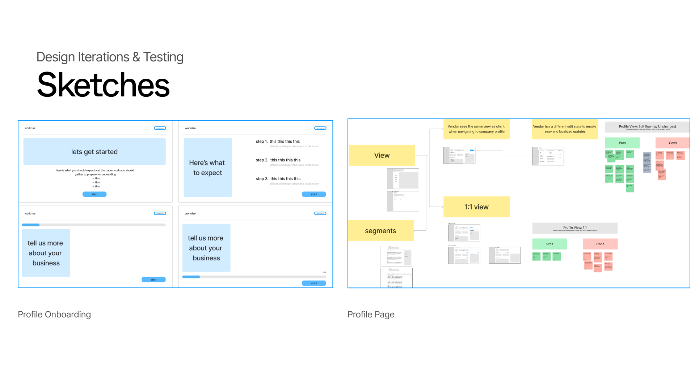

Workrise — Vendor Profile Redesign, Summer 2024
Project focused on improving how vendor users manage, showcase, and find meaning in their profiles. Allowing user profiles to stand out and win more work.
Workrise connects clients and vendors in the skilled trades and energy sector — streamlining everything from sourcing to payments. But despite the platform's reach, vendors were disengaged from a core part of the experience: their own profiles.
During my time at Workrise, I conducted problem discovery which allowed me to investigate why vendor users found it difficult to manage their profiles, and to design solutions that would make the experience more meaningful, personalized, and effective at showcasing what makes each vendor unique.
Workrise is an operations platform for the skilled trades and energy industry. It connects clients with vendors, streamlines field operations, and handles everything from sourcing and staffing to bid management and payments.
Its core products include vendor management, staffing and payroll, and bid management — making it an end-to-end solution for companies that rely on a distributed workforce to get work done.

This prompt opened up a design challenge centered on improving an existing experience. The goal was to identify where the current vendor profile fell short and produce impactful design decisions that would help vendors better represent themselves on the platform.
Vendor users found it difficult to find meaning in managing their profile. Opportunities existed to improve existing features, expand educational reminders, and understand competitors to explore additional personalization features.
I began with a deep dive into the existing vendor profile experience, mapping where users were dropping off and where the design was failing to communicate value. Three distinct friction areas emerged that shaped the entire design direction.
Over 2000 vendors but only 273 have completed their profiles.


Current state vendor profile — highlighting the key areas where visual hierarchy, value communication, and personalization fell short.
I audited competitor platforms to understand how they handled vendor and company profile experiences — identifying patterns in hierarchy, personalization, and value communication that Workrise could learn from and adapt.


Based on research findings, I formed three hypotheses to guide the design direction, each targeting one of the core problem areas.
The design process moved through rapid ideation, structured wireframing, and iterative refinement. I always tethered to user feedback and scoped to what was achievable within the internship timeline.

Early sketch explorations across profile hierarchy, reminder patterns, and personalization features.


I conducted a live user testing session with Daniel, a Sales Engineer at DXP Enterprises who has experience building and managing profiles for a large-cap company. I walked him through two hi-fi screens and conducted a structured debrief.

"I want to control how I market my company. Pictures and videos — that's what makes a difference."
— Daniel, Sales Engineer at DXP EnterprisesThe final hi-fidelity designs addressed all three core problem areas — clearer hierarchy, richer personalization, and stronger communication of profile value — while staying within the scope of the profile space.

Redesigned vendor profile — improved hierarchy, value communication, and personalization options.


Working at Workrise taught me that design is never static and being open to change is what separates good work from great work.
I left the internship with a deeper appreciation for user research, empathy in design, and the satisfaction of seeing my work ship to production.